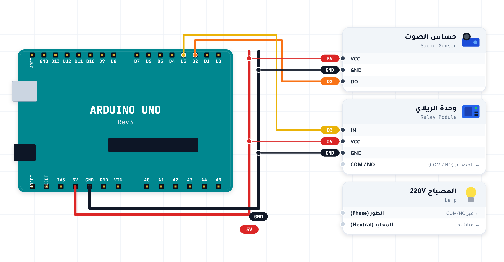

▶فيديو الشرح
صفّق مرتين فتشتعل الإضاءة، وصفّق مرتين مجدداً فتنطفئ.
1المكونات
ARDUINO UNOboardحساس الصوتSound Sensorوحدة الريلايRelay Moduleالمصباح 220VLampأسلاك توصيلJumper Wiresلوحة تجاربBreadboard
2مخطط التوصيل

اضغط على المخطط لتكبيره · نسخة SVG عالية الدقة
| القطعة | الطرف | يوصل إلى |
|---|---|---|
| حساس الصوت | VCC | 5V |
| حساس الصوت | GND | GND |
| حساس الصوت | DO | D2 |
| وحدة الريلاي | IN | D3 |
| وحدة الريلاي | VCC | 5V |
| وحدة الريلاي | GND | GND |
| وحدة الريلاي | COM / NO | المصباح (COM / NO) |
| المصباح 220V | الطور (Phase) | عبر COM/NO |
| المصباح 220V | المحايد (Neutral) | مباشرة |
3الكود
لا يحتاج هذا المشروع إلى أي مكتبة إضافية.
/* المستوى المتقدم — المشروع 5: التحكم بالإضاءة عبر الأوامر الصوتية (التصفيق) كتاب: 38 مشروع في شهر — لؤي النصري (@robotlouay) التوصيل: حساس الصوت: VCC → 5V GND → GND DO → Pin 2 الريلاي: VCC → 5V GND → GND IN → Pin 3 مؤشر الحالة: LED المدمج في اللوحة (Pin 13) المصباح: COM و NO في الريلاي على سلك الطور (Phase) اضبط برغي الحساسية حتى يومض ضوء الحساس عند التصفيق فقط. */ const int SOUND_PIN = 2; // يدعم المقاطعة (Interrupt 0) const int RELAY_PIN = 3; const int LED_PIN = 13; volatile unsigned long lastClapTime = 0; volatile int clapCount = 0; unsigned long firstClapTime = 0; bool lampOn = false; void soundDetected() { // تُنفّذ فوراً عند كل صوت عالٍ unsigned long now = millis(); if (now - lastClapTime > 150) { // تجاهل ارتداد نفس التصفيقة clapCount++; lastClapTime = now; } } void setup() { Serial.begin(9600); pinMode(SOUND_PIN, INPUT); pinMode(RELAY_PIN, OUTPUT); pinMode(LED_PIN, OUTPUT); attachInterrupt(digitalPinToInterrupt(SOUND_PIN), soundDetected, RISING); } void loop() { noInterrupts(); int claps = clapCount; unsigned long last = lastClapTime; interrupts(); if (claps == 1 && firstClapTime == 0) firstClapTime = last; // تصفيقتان خلال أقل من ثانية → تبديل حالة المصباح if (claps >= 2 && last - firstClapTime < 1000) { lampOn = !lampOn; digitalWrite(RELAY_PIN, lampOn ? HIGH : LOW); digitalWrite(LED_PIN, lampOn ? HIGH : LOW); Serial.println(lampOn ? "Lamp ON" : "Lamp OFF"); noInterrupts(); clapCount = 0; interrupts(); firstClapTime = 0; delay(300); } // انتهت المهلة دون تصفيقة ثانية → إعادة العد if (claps > 0 && millis() - last > 1000) { noInterrupts(); clapCount = 0; interrupts(); firstClapTime = 0; } }
هذا المشروع يعتمد على مكتبات أو لوحات غير متوفرة في mBlock 5، لذلك نستعمل Arduino IDE. انسخ الكود من تبويب Arduino IDE.
4كيف يعمل؟
- حساس الصوت يعطي نبضة عند صوت عالٍ
- المقاطعة تسجل كل تصفيقة فوراً
- تصفيقتان خلال ثانية → تبديل الحالة
- الريلاي يشغّل المصباح
⚠ قبل توصيل الكهرباء: راجع كل سلك مع الجدول أعلاه، وتأكد من عدم وجود تماس بين 5V و GND. اختر اللوحة والمنفذ الصحيحين من قائمة Tools في Arduino IDE.